一篇学会使用3D摄像机
我们都知道，电影是通过摄像机将故事与画面呈现给观众。
虚拟的3D世界，也需要通过虚拟的摄像机，将三维画面及情节呈现给用户或者玩家。在3D游戏中，Camera相当于眼睛，通过他来看世界，一切景象都通过Camera来渲染。也就是说如果场景内没有摄像机，那么游戏画面内就不会显示任何物体。场景中的摄像机还可以放置在场景中的子节点中，比如添加到主角角色模型中，同样可以呈现3D画面。
在LayaAir引擎中，我们可以有一个摄像机，也可以有多个摄像机同时工作，这取决于我们开发者的实际需求。
本篇，我们来学习如何控制LayaAir引擎3D摄像机，以及日常使用摄像机的功能介绍。
二、IDE中的摄像机
Section titled “二、IDE中的摄像机”下面我们先来了解一个3D场景中的摄像机的参数都有哪些，通过创建3D-RPG项目来参考，如图2-1所示
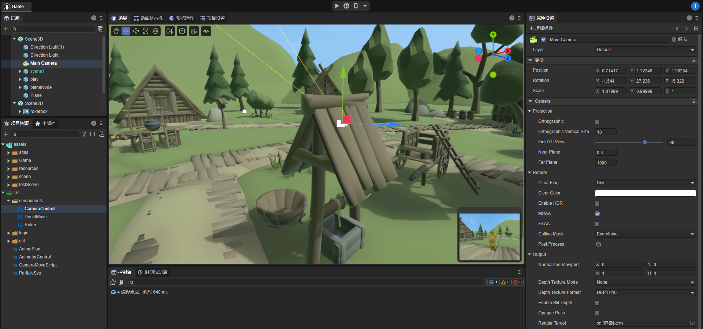
（图2-1）
当我们创建一个新的3D场景时，引擎会自动添加一个主摄像机 Main Camera 在Scene3D节点下。当然也还可以添加更多的摄像机。当我们如图2-1所示，选中主摄像机时，Scene窗口中会出现一个Camera Preview窗口，用来显示主摄像机所看到的视野，这样方便我们来预览，当我们移动或者旋转摄像机时，预览中的视野会随着改变，当然其他的参数设置也会有所变化，后面我们会详细讲解。
通过图2-2所示，LayaAir中摄像机具备如下一些参数设置，这些参数能够很好的满足项目的需要，红色的参数会是我们常用的设置
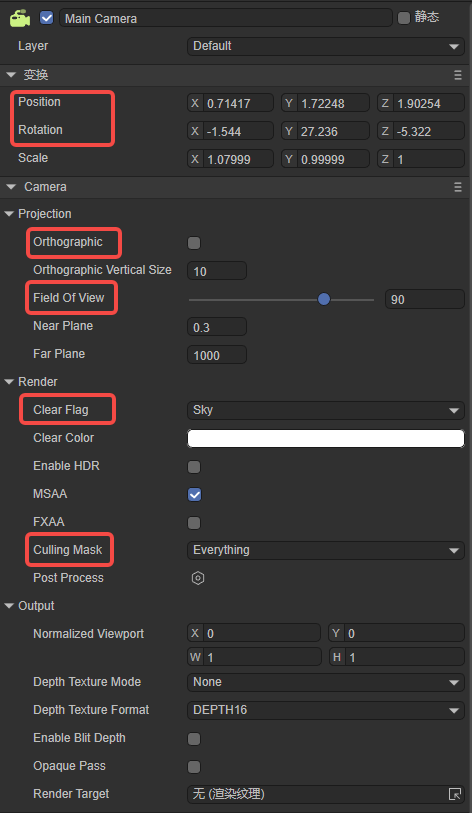
（图2-2）
如图2-2所示，最上面的红色区域内的参数，就是摄像机的位置和旋转，区别于其他场景内的物体，摄像机的位置和旋转，不只是自己的参数，而是能够对我们的视野做出改变。
3.1 移动和旋转
Section titled “3.1 移动和旋转”通常我们可以通过Scene窗口下的移动和旋转，来调整摄像机的位置，如动图3-1所示。
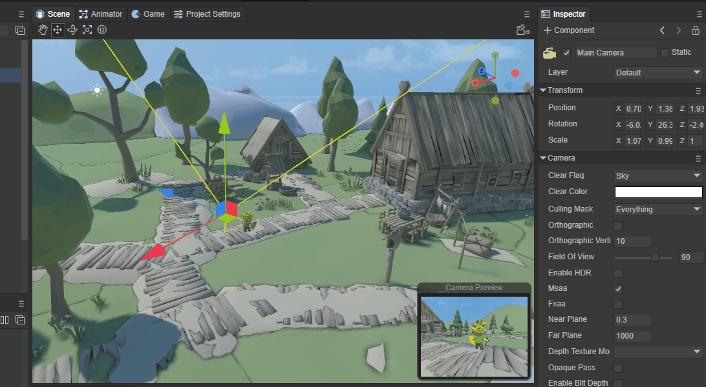
（动图3-1）
也可以用另外一种方式定位摄像机，如动图3-2所示， 先在Scene窗口中移动场景， 找到合适你的位置和角度，点Main Camera节点，同时按下 Ctrl+Shift+F ，此时摄像机的位置和角度就会变更到你所定位的点。
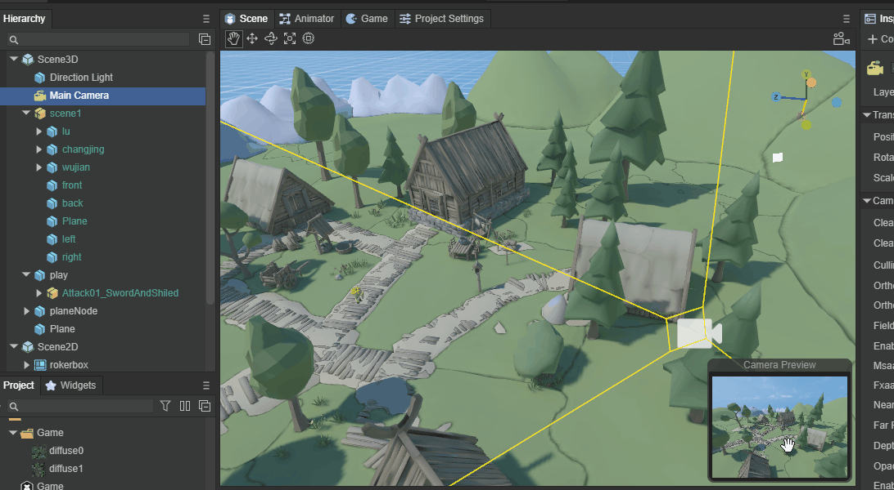
（动图3-2）
以上这只是在编辑器中调整摄像机的位置，可能是初始化场景时摄像机的初始位置。
3.2 跟随移动
Section titled “3.2 跟随移动”在3D游戏中，往往我们需要通过代码来调整摄像机的位置，比如摄像机一直跟随主角的移动和旋转来做调整，如动图3-3所示。
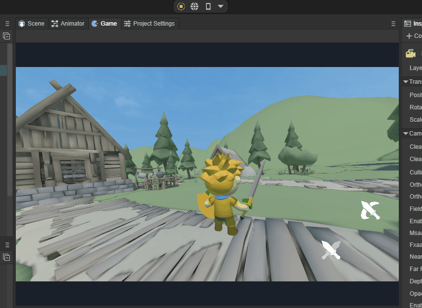
（动图3-3）
可以通过代码来处理，在Main Camera节点下添加CameraControll 脚本，随着主角的移动，摄像机的位置也同步移动，代码如下：
const { regClass, property } = Laya;
@regClass()export default class CameraControll extends Laya.Script { @property( { type: Laya.Sprite3D } ) public target: Laya.Sprite3D; private camera: Laya.Camera; public distanceUp: number = 0.5;//相机与目标的竖直高度参数 public distanceAway: number = 10;//相机与目标的水平距离参数 public smooth: number = 2;//位置平滑移动插值参数值 public camDepthSmooth: number = 20 public curpos: Laya.Vector3; private delatpos: Laya.Vector3; constructor() { super(); }
/** * 组件被激活后执行，此时所有节点和组件均已创建完毕，此方法只执行一次 * 此方法为虚方法，使用时重写覆盖即可 */ onAwake(): void { this.curpos = new Laya.Vector3(); }
/** * 第一次执行update之前执行，只会执行一次 * 此方法为虚方法，使用时重写覆盖即可 */ onStart(): void { this.camera = this.owner as Laya.Camera; if (this.target) { this.target.transform.position.cloneTo(this.curpos); this.delatpos = new Laya.Vector3(); } }
/** * 每帧更新时执行，尽量不要在这里写大循环逻辑或者使用getComponent方法 * 此方法为虚方法，使用时重写覆盖即可 */ onUpdate(): void { if (!this.target || !this.camera) return; this.target.transform.position.vsub(this.curpos, this.delatpos); this.camera.transform.position.vadd(this.delatpos, this.delatpos); this.camera.transform.position = this.delatpos; this.target.transform.position.cloneTo(this.curpos); }
}四、Projection
Section titled “四、Projection”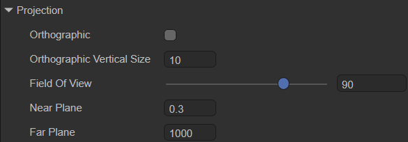
（图4-1）
摄像机成相效果的投影方式有两个选项，分别是默认值透视模式Perspective和正交模式Orthographic。在LayaAir IDE中，通过是否勾选Orthographic来选择使用哪种方式。
4.1 Perspective 透视模式
Section titled “4.1 Perspective 透视模式”当我们没有勾选Orthographic，就是采用Perspective方式，也是最常用的方式。透视投影的观察体是视锥体，它使用一组由投影中心产生的放射投影线，将三维对象投影到投影平面上去。这种透视模式，是一种模拟了人眼近大远小视觉效果的摄像机成相模式，如动图4-2所示。
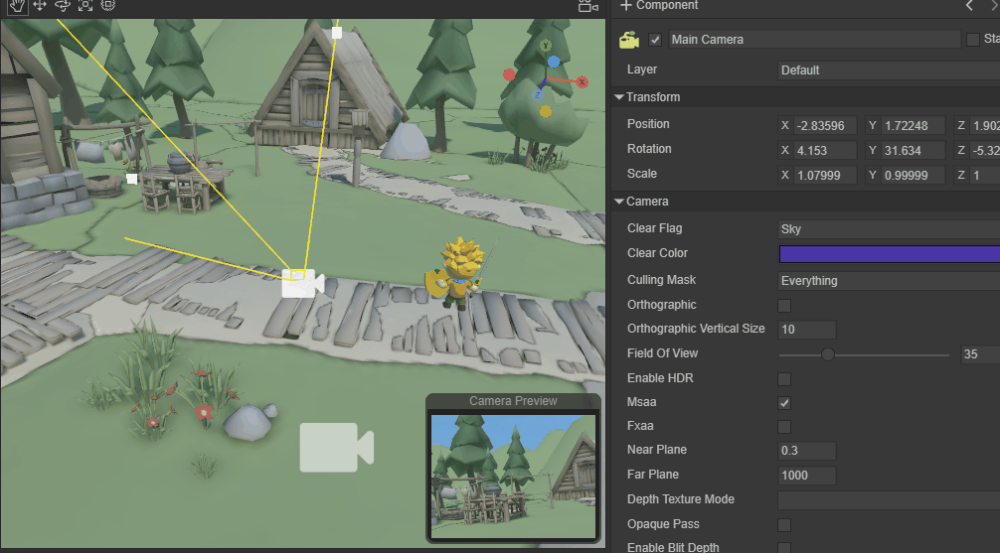
（动图4-2）
Field of view是视野范围，从动图4-2可以看到，通过修改Field Of View，可以调整透视模式下的视野范围，从4到120度，只有使用透视投影时，Field Of View才有效。
剪裁平面是与摄像机视野方向垂直的平面。通过近裁剪面与远裁剪面两个子参数来设置摄像机渲染的范围，超出范围的部分不会被渲染显示，犹如被剪裁掉的效果。
Near Plane是近裁面，是指离摄像机视野方向最近的剪裁面，小于此距离值的不渲染。
Far Plane是远裁面，是指离摄像机视野方向最远的剪裁面，大于此距离值的不渲染。
这两个参数在透视投影与正交投影下均有效。如动图4-3所示，我们来看看修改这两个参数的效果，
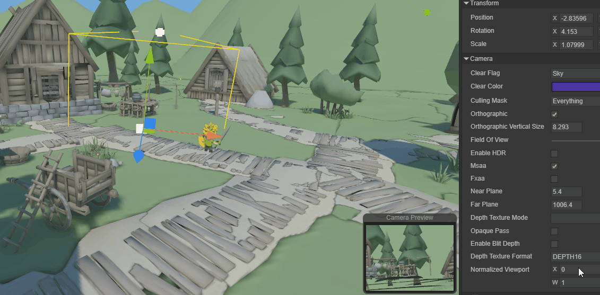
（动图4-3）
4.2 Orthographic 正交模式
Section titled “4.2 Orthographic 正交模式”正交投影模式的观察体是规则的长方体，它使用一组平行投影，将三维对象投影到投影平面上去，如图4-4所示。
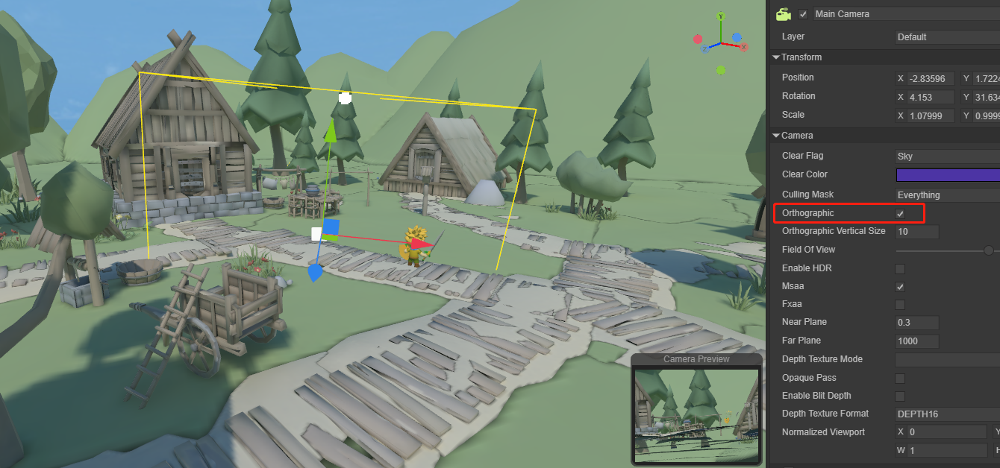
（图4-4）
Orthographic Vertical Size是视野大小，用于设置正交模式下的视野大小，如动图4-5所示。只有在正交模式下，Orthographic Vertical Size才有效。
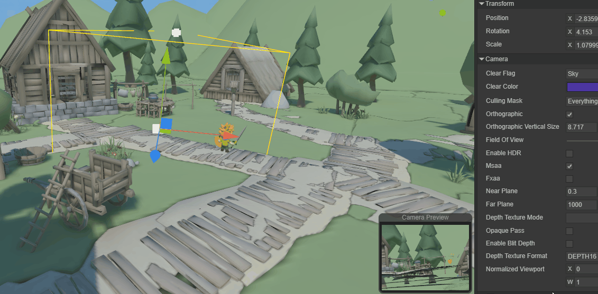
（动图4-5）
五、Render
Section titled “五、Render”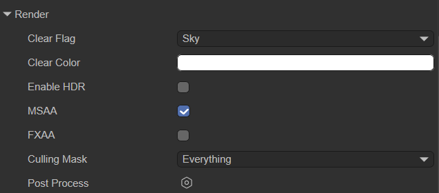
（图5-1）
5.1 清除标志
Section titled “5.1 清除标志”每个摄相机在渲染时，都会先将颜色和深度信息存储起来，也就是ColorBuffer与DepthBuffer，然后下一帧直接读取缓冲区中颜色和深度信息，而不是实时计算的。当使用多个摄像机时，由于每一个摄像机都将自己的颜色和深度信息存储在缓冲区中，那将积累大量的渲染数据。
所以，Clear Flags（清除标记）可以决定是否清除当前渲染之前存储起来的缓冲区信息，该属性功能有四个选项（Sky、SolidColor、DepthOnly、Nothing），下面分别介绍它们具体清除什么缓冲信息。
- Sky 天空盒
天空盒是默认选项，表示着清除当前渲染之前的全部摄相机缓冲区的颜色与深度信息，使用天空盒代替。如果没有指定天空盒，则会显示默认清除色（Clear Color属性的颜色）。
- SolidColor 纯色
表示着清除当前渲染之前的全部摄相机缓冲区的颜色与深度信息，使用清除色（Clear Color属性的颜色）代替，屏幕上的任何空的部分都将显示当前摄像机的颜色。
- Nothing 不清除
表示该选项不清除摄相机缓冲区的信息，颜色与深度信息全都保留着。这样做会导致每帧渲染的结果都会叠加在下一帧之上。
看起来这选项没有存在的必要，事实上的确不常用，但在一些特定场合还是用的上，例如结合自定义shader来使用。
- DepthOnly 仅深度
表示着只清除当前渲染之前的全部摄相机缓冲区的深度信息，保留全部摄相机缓冲区的颜色信息。
这个功能非常实用，要想将多个摄像机的画面，渲染到同一个画面，就可以通过DepthOnly选项来实现。
例如，在场景中添加一个新的摄像机Camera2，Clear Flag使用DepthOnly，把摄像机Camera2的视野朝向主角，点击运行。可以看到，场景的渲染不变，还是用的天空盒，但是主摄像机是主角所看到的视野，但是屏幕中还有显示了主角，那就是Camera2所看到的，也就是保留了深度信息。
当Clear Flags的DepthOnly开启后，LayaAir引擎会通过摄像机的渲染顺序来控制。默认的渲染顺序就是节点的渲染顺序，开发者也可以通过LayaAir引擎摄像机的renderingOrder来改变渲染顺序。
如果第一摄像机的Clear Flags设置的是Skybox，那第二摄像机的Clear Flags设置DepthOnly，这时需要第一摄像机的渲染顺序在第二摄像机的渲染顺序之前，如图5-2所示，Main Camera节点在Camera2节点之上，所以两个摄像机的渲染画面才会合并到一起。
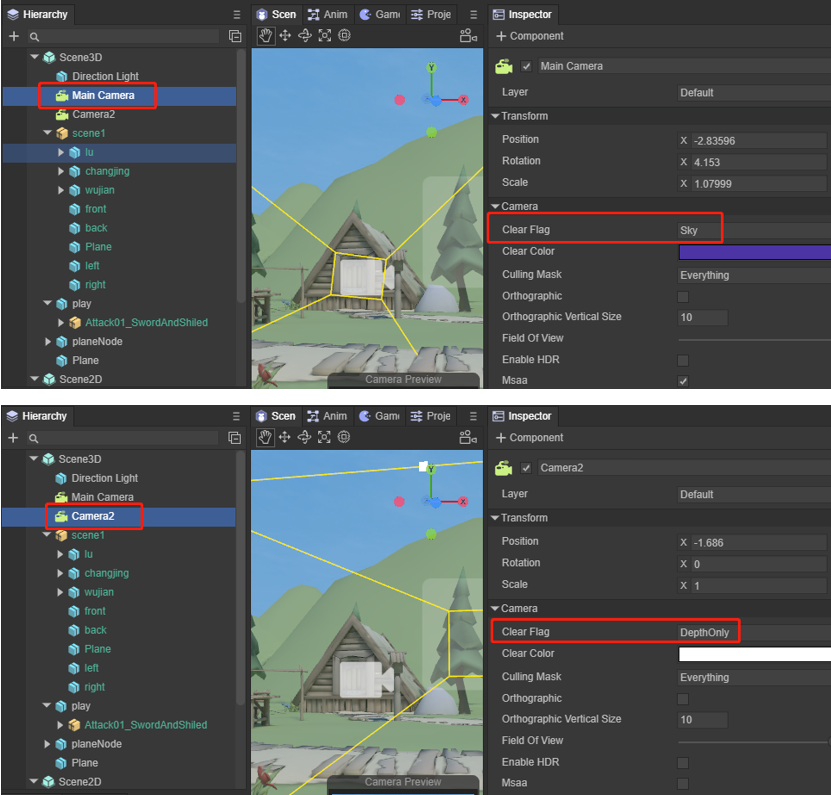
（图5-2）
如果顺序反了，Camera2先渲染的话，虽然只清理了深度信息保留了颜色信息。但后渲染的Main Camera会把前面所有缓冲区深度和颜色的都清理掉，所以就没办法看到合并到一起的画面了。
在同一个场景中，可以使用多个摄像机，当加载到场景中后，它们会产生各自的游戏视图画面。在我们以前遇到的游戏中，如双人3D游戏就使用了两个3D摄像机，左半屏幕显示一个玩家，右半屏幕显示另一个，极大的丰富了游戏性。不过多摄像机的缺点是非常耗性能，模型三角面数与DrawCall数量会成倍上升，多几个摄像机就会多出几倍性能损耗，因此开发者们需酌情考虑。
5.2 高动态光照渲染
Section titled “5.2 高动态光照渲染”高动态范围图像（High-Dynamic Range）简称HDR。HDR相比普通的图像，可以提供更多的动态范围和图像细节，它能够更好的反映出真实环境中的视觉效果。
Enable HDR用于开启摄像机的高动态范围渲染功能，默认是不勾选状态，代表默认不开启HDR。
由于HDR需要基于webGL 2.0，所以，当我们在某些不支持webGL 2.0的平台中发布产品时，需要将此选项去掉，或者在引擎里将摄像机的HDR关闭。
开启HDR，还会导致LayaAir引擎抗锯齿功能无效，需要开启抗锯齿功能的，也不能开启HDR。
5.3 抗锯齿
Section titled “5.3 抗锯齿”MSAA：多重采样抗锯齿。MSAA首先来自于OpenGL，具体是MSAA只对Z缓存( Z-Buffer)和模板缓存（Stencil Buffer）中的数据进行超级采样抗锯齿的处理。可以简单理解为只对多边形的边缘进行抗锯齿处理。
FXAA：快速近似抗锯齿。FXAA的基本原理与MSAA相同，都是通过提取像素界面周围的颜色信息并完成混合来消除高对比度界面所产生的锯齿。但是FXAA将像素的提取和混合过程交由GPU内的ALU来执行，因此其所占用的显存带宽要大大低于传统的MSAA。
5.4 剔除遮罩
Section titled “5.4 剔除遮罩”在LayaAir中，可以为每个节点设置所属的Layer(层)，不设置就是默认的Default层。如图5-3所示，是主角这个节点，默认使用Default层，
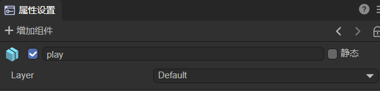
（图5-3）
Culling Mask（剔除遮罩），就是针对层的渲染剔除进行设置，通常会与DepthOnly搭配使用。
例如，将Cube节点设置到一个独立的cube层上，Culling Mask选择cube层，那渲染的时候，将会剔除该摄像机其它的节点物体，像遮罩效果一样，只保留cube层上的节点物体，这样，摄像机合并显示的时候，就只合并保留层上的节点物体。如图5-4所示，
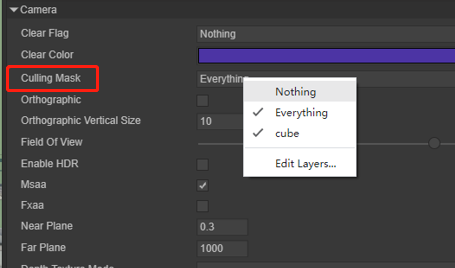
（图5-4）
代码中设置Culling Mask可以指定单层，也可以多层混合，例如：
xx.cullingMask=Math.pow(2,0)|Math.pow(2,1); //该代码表示为第0层和第1层渲染显示。
六、Output
Section titled “六、Output”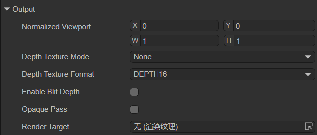
（图6-1）
6.1 视图矩形
Section titled “6.1 视图矩形”视图矩形是通过X\Y\W\H四个数值来控制摄像机的视图在屏幕中的位置和大小的功能。这四个数值均使用屏幕坐标系，数值范围是0～1，可以设置小数。
具体的参数说明为：
- X：水平位置起点
- Y：垂直位置起点
- W：宽度
- H：高度
需要注意的是，在LayaAir中表示屏幕左上角(0,0)位置。如图6-2所示，
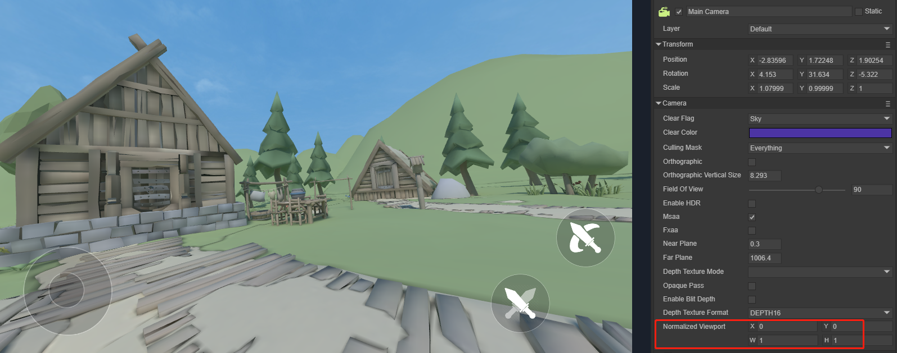
（图6-2）
假如我们将屏幕水平位置起点X设置为0.25，屏幕垂直位置起点Y设置为0.25，宽度W设为0.5，高度H设为0.5，在LayaAir中效果如图6-3所示。
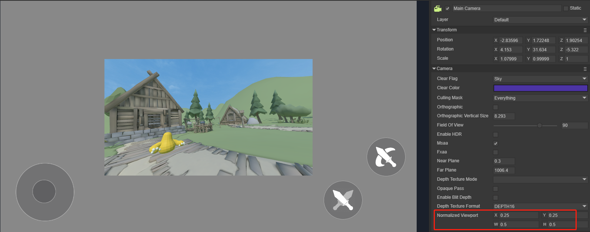
（图6-3）
6.2 深度贴图
Section titled “6.2 深度贴图”Depth Texture Mode：深度贴图模式。
None：不生成深度贴图。Depth：生成深度贴图。 这个模式让摄像机生成的深度纹理只携带深度信息。深度纹理中包含了每一个像素点相对于摄像机的距离（深度值）。DepthNormals：生成深度+法线贴图。在这个模式下，摄像机生成的深度纹理不仅携带了深度信息，同时还包含了物体表面的法线信息。DepthAndDepthNormals：这个模式是Depth和DepthNormals的结合体。在此模式下，摄像机将同时生成包含深度信息和深度法线信息的纹理。这种类型的深度纹理不仅存储了每个像素的深度值（距离摄像机的距离），还存储了法线信息。
Depth Texture Format：摄像机深度格式与深度纹理的默认值是DEPTH_32，也可以根据需要选择16位和24位的深度模式。用于设置depthTextureFormat属性。
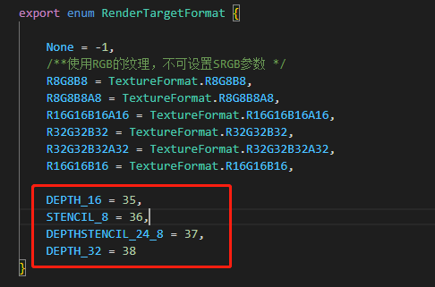
（图6-4）
6.3 目标纹理
Section titled “6.3 目标纹理”目标纹理就是指摄像机的 RenderTarget 属性。它将摄像机的视图放置在一个纹理上，该纹理可以被应用到另一个对象。这样就可以方便地创建镜子，监控摄像机等效果了。注意的是使用了该属性的摄像机将禁用渲染到屏幕的功能。
相关功能还有渲染纹理。
6.4 其它
Section titled “6.4 其它”Opaque Pass：开启opaquePass后，会生成非透明物体贴图。在Shader中可以引入u_CameraOpaqueTexture来得到相机渲染管线的非透明图片。使用非透明物体贴图功能，可以实现玻璃折射，水面折射，热浪等效果。
Enable Blit Depth：设置是否使用内置的深度贴图 (如果开启，只可在后期使用深度贴图，不可在渲染流程中使用)。
七、通过代码使用摄像机
Section titled “七、通过代码使用摄像机”7.1 如何从摄像机创建一条射线
Section titled “7.1 如何从摄像机创建一条射线”从摄像机创建一条射线，使用的是camera的 viewportPointToRay 方法。生成的这条射线是从摄像机的近裁剪面的一点出发，向远裁剪面的一点。这个射线的反向延长线经过摄像机的原点。
/** * 计算从屏幕空间生成的射线。 * @param point 屏幕空间的位置位置。 * @param out 输出射线。 */ viewportPointToRay(point: Vector2, out: Ray): void { _tempVector20.setValue(point.x * ILaya.stage.clientScaleX * Config3D.pixelRatio, point.y * ILaya.stage.clientScaleY * Config3D.pixelRatio); this._rayViewport.x = this.viewport.x; this._rayViewport.y = this.viewport.y; this._rayViewport.width = this.viewport.width; this._rayViewport.height = this.viewport.height; Picker.calculateCursorRay(_tempVector20, this._rayViewport, this._projectionMatrix, this.viewMatrix, null, out); }参照3D-RPG项目，我们加上一段代码，当鼠标点击屏幕时，会发射一条射线，这条射线碰到的点，会创建一个立方体。代码和效果如下所示：
//在CameraControll.ts类下的onStart()方法中，加入鼠标按下监听 //Laya.stage.on(Laya.Event.MOUSE_DOWN,this, this.onMouseDown);
//鼠标点下事件，处理发射射线，检测碰撞物体 onMouseDown(e: Laya.Event) {
let point = new Laya.Vector2(); point.x = Laya.stage.mouseX; point.y = Laya.stage.mouseY; //产生射线 let ray = new Laya.Ray(new Laya.Vector3(0, 0, 0), new Laya.Vector3(0, 0, 0)); this.camera.viewportPointToRay(point,ray); //拿到射线碰撞的物体 let outs : any[] = []; this.scene.physicsSimulation.rayCastAll(ray,outs); //如果碰撞到物体 if (outs.length !== 0) { for (let i = 0; i < outs.length; i++){ //在射线击中的位置添加一个立方体 let box = new Laya.MeshSprite3D(Laya.PrimitiveMesh.createBox(1, 1, 1)); box.transform.position = new Laya.Vector3(outs[i].point.x, outs[i].point.y, outs[i].point.z); this.scene.addChild(box); }
} }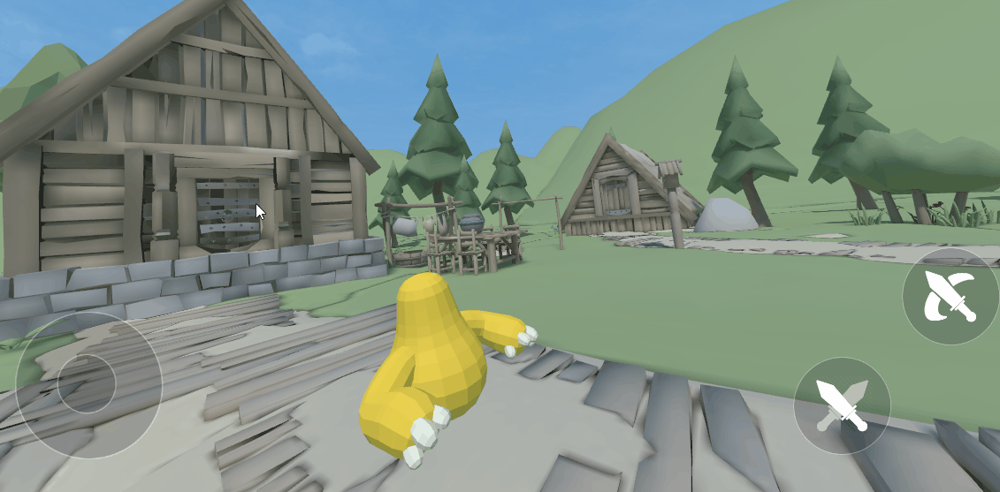
（动图7-1）
7.2 可视遮罩层Layer
Section titled “7.2 可视遮罩层Layer”前面5.4节中也提到过Culling Mask的用处，在我们制作游戏时，我们也可用通过代码来达到‘ 隐身 ’的效果。
还是用3D-RPG项目为例，我们先设置两个Layer。
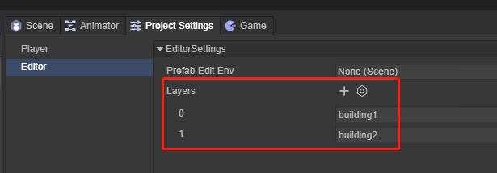
（图7-2）
再把这两个屋子的Layer改为Building1和Building2，如图7-3，7-4所示，
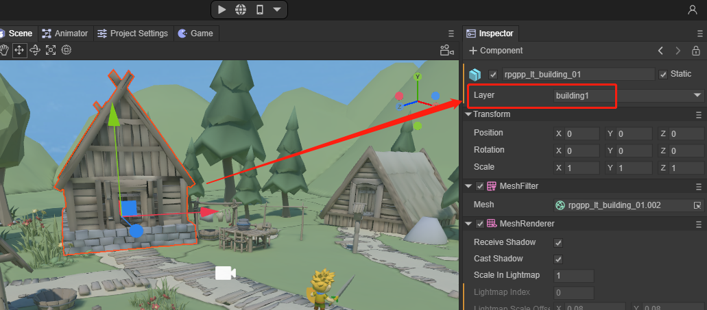
（图7-3）
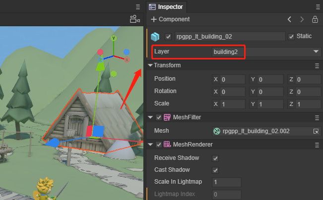
（图7-4）
我们在CameraControll.ts类添加如下代码：
private layerIndex: number = 0; onMouseDown(e: Laya.Event) { //清除所有图层 this.camera.removeAllLayers(); this.layerIndex++; //设置可视图层 this.camera.addLayer(this.layerIndex%2+ 1); }效果如动图7-5所示，
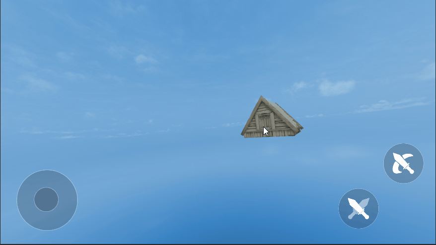
（动图7-5）
7.3 捕捉目标
Section titled “7.3 捕捉目标”在创建摄像机时，我们经常需要调整摄像机的位置，用于对准显示某个三维物体，或显示某个区域。对于初学者来说，空间思维还未形成习惯，调整位置所花的时间会很多。LayaAir的3D变换提供了一个lookAt()方法，用于捕捉目标，自动调整3D对象对准目标点。摄像机也可以使用它达到我们的调整视角的目的。
/** * 观察目标位置。 * @param target 观察目标。 * @param up 向上向量。 * @param isLocal 是否局部空间。 */ lookAt(target: Vector3, up: Vector3, isLocal: boolean = false, isCamera: boolean = true): void同样，我们在3D-RPG项目中，通过鼠标点击来切换所见区域，代码如下：
//CameraControll.ts类脚本中，添加3个节点对象，把3个不同的房子建筑拖入到属性中 @property( { type: Laya.Sprite3D } ) public target1: Laya.Sprite3D; @property({ type: Laya.Sprite3D }) public target2: Laya.Sprite3D; @property({ type: Laya.Sprite3D }) public target3: Laya.Sprite3D; private _up = new Laya.Vector3(0, 1, 0); private index: number = 0; //同样，添加鼠标事件，来修改摄像机对3个建筑的朝向 onMouseDown(e: Laya.Event) { this.index++; if (this.index % 3 === 1 ){ //摄像机捕捉模型目标 this.camera.transform.lookAt(this.target1.transform.position, this._up); } else if (this.index % 3 === 2){ //摄像机捕捉模型目标 this.camera.transform.lookAt(this.target2.transform.position, this._up); } else{ //摄像机捕捉模型目标 this.camera.transform.lookAt(this.target3.transform.position,this._up); } }效果如下：
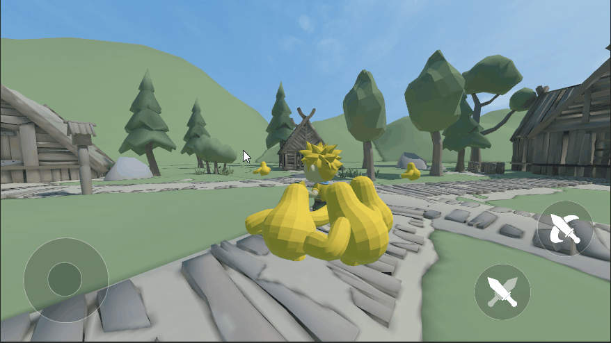
（动图7-6）
7.4 横纵比
Section titled “7.4 横纵比”我们一般不会手动设置屏幕的横纵比，在运行过程中会通过计算自动设置横纵比。但是在一些特殊的情况下需要对横纵比手动设置时，可以自己手动设置。如果需要重置横纵比，变回自动改变横纵比，只需要将这个值设置为0。
//手动设置横纵比camera.aspectRatio = 2;//重置camera.aspectRatio = 0;7.5 目标纹理
Section titled “7.5 目标纹理”我们依然用3D-RPG项目为例，Main Camera为场景主渲染摄像机，添加一个新的 renderTargetCamera 为开启 RenderTarget 属性的摄像机。同时在场景中添加一个Plane，面向主摄像机，如图7-7所示。
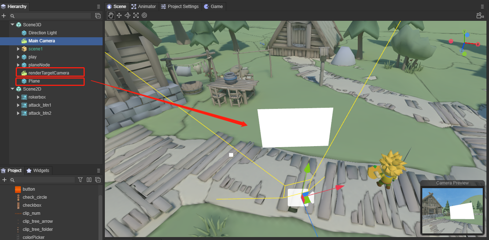
（图7-7）
接下来，我们把Plane和renderTargetCamera添加到CameraControll.ts脚本中，
@property({ type: Laya.Camera }) public renderTargetCamera: Laya.Camera; @property({ type: Laya.Sprite3D }) public plane: Laya.Sprite3D;并在onStart()中添加代码：
//选择渲染目标为纹理 this.renderTargetCamera.renderTarget = Laya.RenderTexture.createFromPool(512, 512, Laya.RenderTargetFormat.R8G8B8A8, Laya.RenderTargetFormat.DEPTH_16, false, 1); //渲染顺序 this.renderTargetCamera.renderingOrder = -1; //清除标记 this.renderTargetCamera.clearFlag = Laya.CameraClearFlags.Sky; //创建一个UnlitMaterial材质 var mat1: Laya.UnlitMaterial = new Laya.UnlitMaterial(); mat1.albedoColor = new Laya.Color(1.0, 1.0, 1.0, 1.0); mat1.cull = Laya.RenderState.CULL_NONE; //指定plane的材质为创建的材质 this.plane.getComponent(Laya.MeshRenderer).sharedMaterial = mat1; //指定纹理为摄像机的渲染目标 mat1.albedoTexture = this.renderTargetCamera.renderTarget;在LayaAir引擎中，渲染顺序renderingOrder越小，渲染优先度越高。
运行效果如动图7-8所示，场景中多了一个摄像机的视图放在Plane上作为纹理，
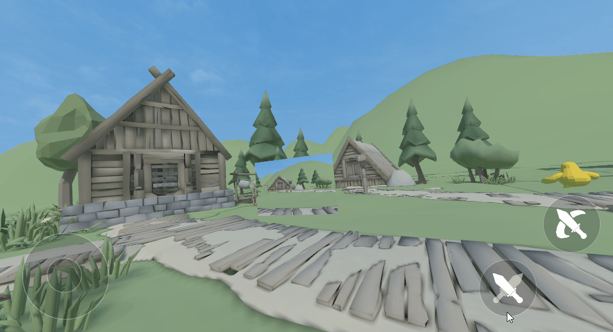
（动图7-8）